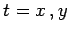
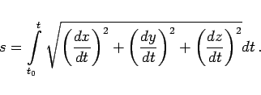

Inhalt Index DeskTop Bronstein

 Geometrie Differentialgeometrie Raumkurven Möglichkeiten, eine Raumkurve zu definieren
Geometrie Differentialgeometrie Raumkurven Möglichkeiten, eine Raumkurve zu definieren


Zur Definition einer Raumkurve gibt es die folgenden Möglichkeiten:
mit t als beliebigem Parameter, wobei ist  oder z sein kann.
mit der Bogenlänge s zwischen einem festen Punkt A und dem laufenden Punkt P:
|  | (3.490b) |